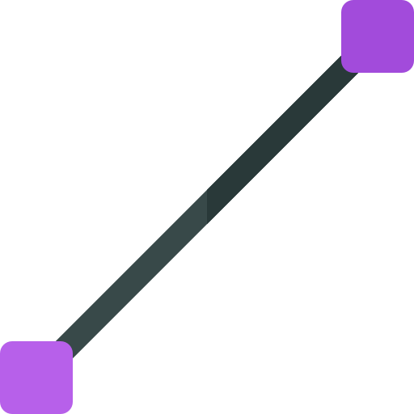

Tema 1
INTRODUCCIÓN A LA MANUFACTURA INTEGRADA POR COMPUTADORA
Maestro:
Francisco Ruvalcaba Grandos
# Sistemas de Manufactura Integrada por Computadora --- # Caracterización de la asignatura Esta asignatura, forma en el estudiante de la carrera de Ingeniería Industrial, la capacidad de gestión de procesos productivos de manera sustentable, aplica tecnologías para optimizar sistemas productivos, crea y mejora productos de alto valor agregado bajo los principios de productividad y competitividad. La importancia de los Sistemas de Manufactura Integrada por Computadora radica en que debido al alto grado de avance de la tecnología computacional y de informática en los últimos años es vital para que la eficiencia, productividad y calidad en los sistemas de manufactura que deben tener las organizaciones competitivas en el ámbito nacional e internacional a través de la creación de nuevos conceptos y metodologías para la realización de los procesos de manufactura. Consiste en identificar los diferentes sistemas de producción, formas de trabajo y en la actualización de métodos que conforman el funcionamiento de los sistemas productivos aplicados en la industria. Desarrollar programas de cambio en las organizaciones hacia la generación de productos y servicios capaces de competir a nivel mundial. Esta, se relaciona con las asignaturas de - Sistemas de Manufactura, - Robótica, - Sistemas de Control Numérico, - Diseño Asistido por Computadora, - Dibujo Industrial --- # Intención didáctica El primer tema involucra lo relativo a Manufactura Integrada por Computadora, la importancia, aspectos a analizar en una empresa, se describen además los sistemas flexibles de manufactura, elementos y clasificación para su implementación integrando la automatización, se considera los niveles y modelos de un CIM. En el segundo tema se analizan las componentes que forman un sistema integrado por computadora, al igual que sus ventajas y limitaciones, así como la fundamentación de sus partes, se detalla de manera similar las redes industriales de comunicación y los requerimientos necesarios para la base de datos del CIM. El tercer tema proporciona al alumno los elementos genéricos del software especializado de simulación para implementar el modelo en computadora, operarlo y analizar los resultados obtenidos. Asi mismo se prepara, programa y opera una Celda de Manufactura Flexible con una debida planeación de las condiciones necesarias y control de producción utilizando como herramienta del software especializado para optimizar los procesos productivos de la empresa. En el cuarto tema se analizan las diferentes metodologías de justificación para la implantación de un CIMS que consideran atributos cuantitativos y cualitativos hasta la puesta en marcha, desde un punto de vista rentable y económico para la empresa, así mismo se aplica el método IDEF0 para el análisis del sistema, igualmente se detallan las pruebas de aceptación para el CIM. El estudiante investiga, los conceptos de manufactura, sistemas de manufactura y automatización, describe los diferentes componentes de la manufactura y áreas de oportunidad dentro de la empresa para los diferentes sistemas productivos, plantea los medios necesarios para la implementación de las celdas flexibles de manufactura, prepara, programa y opera la celda de manufactura, justifica, analiza y realiza pruebas de aceptación para la implementación del CIM. Para el desarrollo de competencias específicas y genéricas el docente propiciará los ambientes de aprendizaje por medio de estrategias de enseñanza y aprendizaje tanto individuales como grupales, que generen el conocimiento a partir del análisis de la información teórica y práctica de acuerdo a cada tema. --- # Competencias previas - Conoce los conceptos de manufactura, propiedades de los materiales. - Conoce los sistemas de coordenadas rectangulares y polares, velocidad tangencial, sistema de unidades. - Conoce el concepto de algoritmo y lógica de programación. - Conoce las normas de Seguridad. - Conoce los procesos de fabricación, Metrología y principios básicos de máquinas herramientas. - Programa Robot IRB-140 ABB A465. - Simula y programa maquina CNC torno y centro de maquinado --- # <a href="file:///C:/Users/Gaby/Documents/2023/Invierno/MAD-2206_diseno_asistido_por_computadora.pdf">Temario</a> ## 1. Introducción a la Manufactura Integrada por Computadora |No.|Subtemas| |-|-| |1.1|Introducción al concepto de CIM| |1.2. |¿Qué es CIM? ¿Por qué CIM?| |1.3. |Sistemas Flexibles de Manufactura.| | 1.3.1 |Que es un FMS.| | 1.3.2| Componentes de un FMS.| | 1.3.3| Clasificación de un FMS.| |1.3.4| Beneficios y Aplicaciones de un FMS.| |No.|Subtemas| |-|-| |1.4.| Automatización y sus componentes.| | 1.4.1 |Elementos Básicos de un Sistema Automatizado.| |1.4.2 |Funciones| Avanzadas de Automatización.| | 1.4.3| Niveles de Automatización.| | 1.4.4| Niveles Jerárquicos del CIM.| | 1.4.5| Niveles de Automatización del CIM.| |No.|Subtemas| |-|-| |1.5. |El desarrollo de la manufactura inteligente hacia la Industria 4.0 | 1.5.1 |Origen y desarrollo de iniciativas para la competitividad de la empresa industrial.| | 1.5.2 |Conceptos principales: sistemas ciberfísicos, gemelo digital.| | 1.5.3 |La Industria 4.0 como un modelo de referencia para la reflexión estratégica| ## 2. Estructura Básica del CIM (Manufactura Integrada por Computadora) |No.|Subtemas| |-|-| |2.1. |Componentes Básicos de un CIM (Manufactura Integrada por Computadora)| |2.2. |Fundamentos de Neumática.| | 2.2.1.| Introducción a la neumática.| | 2.2.2. |Los actuadores neumáticos y sus aplicaciones.| | 2.2.3. |Técnicas de diseño de mandos neumáticos para el control de actuadores de simple y doble efecto.| | 2.2.4. |Simulación de mandos neumáticos aplicados.| | 2.2.5. |<small>Construcción de aplicaciones neumáticas para el control de máquinas y procesos industriales.|</small> |No.|Subtemas| |-|-| |2.3. |Fundamentos de Hidráulica.| |2.4. |Fundamentos de PLC (Controlador Lógico Programable).| | 2.4.1. |Ejemplos y aplicaciones| ## 3. Diseño de Líneas de producción automatizadas |No.|Subtemas| |-|-| |3.1 |Introducción| |3.2 |Programación de entidades, procesos de arribo, recursos, equipos, capacidades, líneas de espera, transportadores, turnos de trabajo, etc.| |3.3 |Condiciones iniciales para corridas de simulación.| |3.4 |Aplicaciones industriales| ## 4. Metodologías empleadas en la justificación del CIM |No.|Subtemas| |-|-| |4.1 |Modelos de decisión para multiatributos.| | 4.1.1 |Análisis razón costo/beneficio.| | 4.1.2 |Proceso analítico de jerarquía (AHP). |4.2 |Modelos de puntaje o calificación (Scoring Models).| |4.3 |Métodos de más alta relación (Outranking Methods).| | 4.3.1 |Electre (Elimination Et Choice Translating Algorithm).| | 4.3.2 |Oreste (Organization Rangement Et Synthese).| | <small>4.3.3 |<small>Promethee (Preferent Ranking Organization Methods for Enrichment Evaluations).| |No.|Subtemas| |-|-| |4.4 |Análisis del Sistema.| | 4.4.1 |Método IDEF 0.| |4.5 |Pruebas de Aceptación| |4.6 |Ingeniería Concurrente| <!--  -->